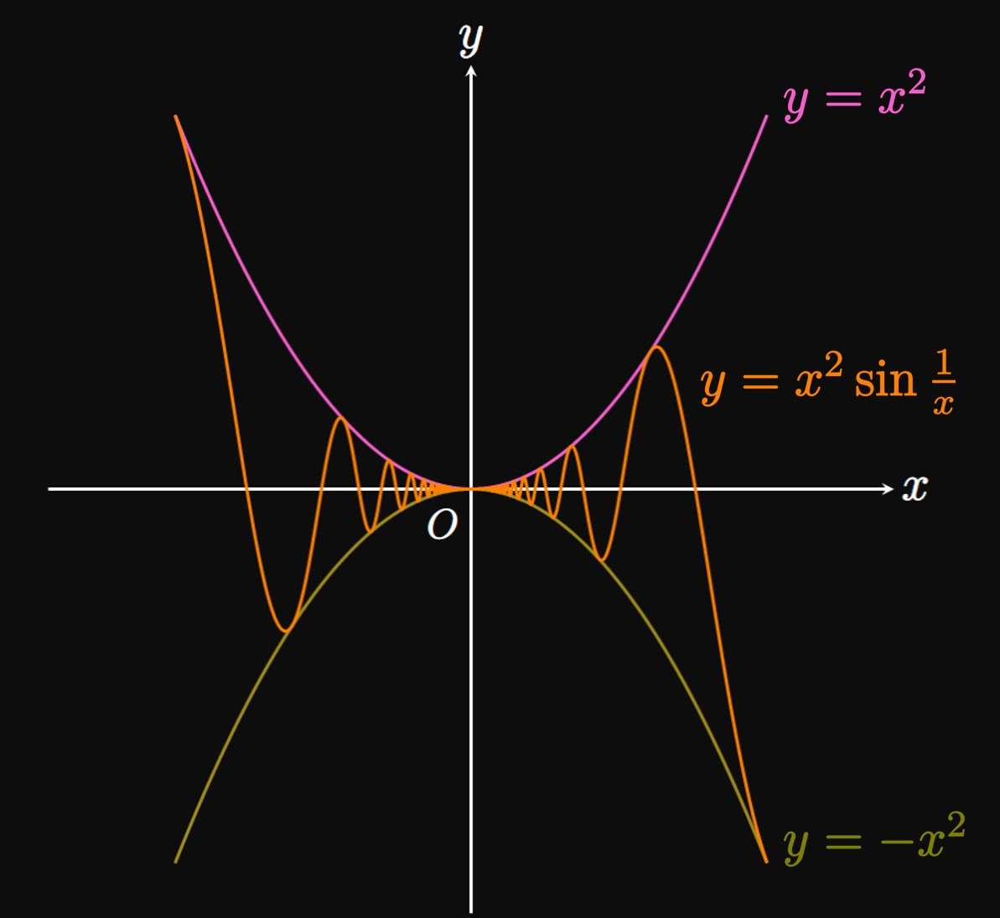
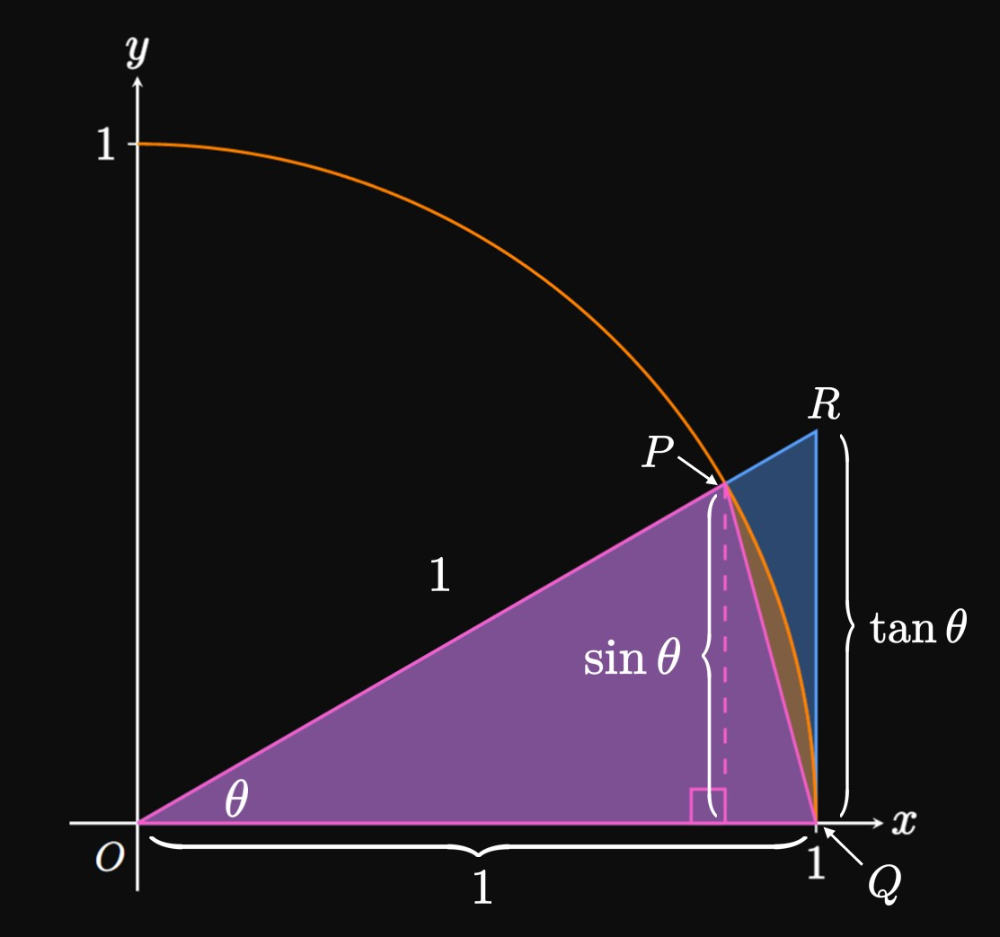

In Section
1.2
we learned techniques to find limits analytically.
In this section we extend these ideas as we evaluate limits
of trigonometric functions and composite functions.
We discuss the following topics:
Suppose that a function \(f\) is bounded between two
other functions \(g\) and \(h.\)
Mathematically, on some interval that contains the number
\(a,\) let \(g(x) \leq f(x) \leq h(x)\)
(except possibly at \(a\) itself).
If \(\lim_{x \to a} g(x)\) and \(\lim_{x \to a} h(x)\)
both equal \(L,\)
then the Squeeze Theorem
asserts that \(\lim_{x \to a} f(x) = L\) too.
(The Squeeze Theorem is also called the Sandwich Theorem
or Pinching Theorem.)
As shown by Figure 1,
as \(x\) is made closer and closer to \(a,\)
the graphs of \(g\) and \(h\)
trap the graph of \(f,\)
thus causing the value of \(f(x)\) to be pinched
toward \(L.\)
SQUEEZE THEOREM
On an interval that contains \(a,\)
let \(g(x) \leq f(x) \leq h(x)\)
(except possibly at \(a\) itself) and
\[\lim_{x \to a} g(x) = \lim_{x \to a} h(x) = L \pd\]
By the
Squeeze Theorem,
\(\lim_{x \to a} f(x) = L\) too.
EXAMPLE 1
\[\lim_{x \to 0} x^2 \sin \frac{1}{x} \]

It's wrong to say
\[\lim_{x \to 0} x^2 \sin \frac{1}{x}
= \par{\lim_{x \to 0} x^2} \par{\lim_{x \to 0} \sin \frac{1}{x}}\]
because \(\lim_{x \to 0} \sin(1/x)\) does not exist
(Example 1.1-5).
The Product Law is only applicable if both limits exist.
Instead, let's bound \(x^2 \sin(1/x)\) between two functions
that have the same limit as \(x \to 0.\)
Since the range of sine is \([-1, 1],\) we have
\[-1 \leq \sin \frac{1}{x} \leq 1 \pd\]
Multiplying every term by \(x^2\) shows
\[
-x^2 \leq x^2 \sin \frac{1}{x} \leq x^2 \pd
\]
Observe that
\[\lim_{x \to 0} \par{-x^2} = \lim_{x \to 0} \par{x^2} = 0 \pd\]
Hence, the Squeeze Theorem gives
\[\lim_{x \to 0} x^2 \sin \frac{1}{x} = \boxed 0\]
(See Figure 2.)
Trigonometric Limits
Just as with limits of polynomials and rational expressions,
limits of trigonometric functions can be evaluated by Direct Substitution.
We therefore attain the following limits.
LIMITS OF TRIGONOMETRIC FUNCTIONS
\(\ds \lim_{x \to a} \sin x = \sin a\)
\(\ds \lim_{x \to a} \cos x = \cos a\)
\(\ds \lim_{x \to a} \tan x = \tan a\)
\(\ds \lim_{x \to a} \cot x = \cot a\)
\(\ds \lim_{x \to a} \sec x = \sec a\)
\(\ds \lim_{x \to a} \csc x = \csc a\)
In addition to these rules,
trigonometric identities help us evaluate limits of trigonometric functions.
The most important one is the Pythagorean identity:
\begin{equation}
\sin^2 x + \cos^2 x = 1 \pd \label{eq:pythag-identity}
\end{equation}
We also use the double-angle identities for sine and cosine,
given as follows:
\begin{align}
\sin 2x &= 2 \sin x \cos x \label{eq:sin-double-angle} \cma \nl
\cos 2x &= \cos^2 x - \sin^2 x \label{eq:cos-double-angle} \pd
\end{align}
As \(\theta \to \pi/4,\) both the numerator and denominator
approach \(0.\)
Hence, this limit is in the indeterminate form \(\indZero.\)
Recall, from Section
1.2,
that we can resolve these limits by canceling common factors.
By \(\eqref{eq:cos-double-angle},\)
the limit becomes
\[
\ba
\lim_{\theta \to \pi/4} \frac{\cos^2 \theta - \sin^2 \theta}{\cos \theta - \sin \theta}
&= \lim_{\theta \to \pi/4} \frac{(\cos \theta + \sin \theta) \cancel{(\cos \theta - \sin \theta)}}{\cancel{\cos \theta - \sin \theta}} \nl
&= \lim_{\theta \to \pi/4} \par{\cos \theta + \sin \theta} \nl
&= \cos \frac{\pi}{4} + \sin \frac{\pi}{4} \nl
&= \frac{\sqrt 2}{2} + \frac{\sqrt 2}{2} = \boxed{\sqrt{2}}
\ea
\]

A Special Limit
An important limit for working with trigonometric functions is
\begin{equation}
\lim_{x \to 0} \frac{\sin x}{x} = 1 \pd \label{eq:sin-lim-1}
\end{equation}
To prove it, we present a geometric argument
that concludes with the Squeeze Theorem.
Let's begin by drawing a Unit Circle
and noting the central angle \(\theta,\)
as shown by Figure 3.
The inscribed triangle \(\Delta OPQ\)
has width \(1\) and height \(\sin \theta;\)
its area is therefore \(\tfrac{1}{2} \sin \theta.\)
Similarly, triangle \(\Delta ORQ\) has width \(1\) and height \(\length{RQ} = \tan \theta\)
(since \(\tan \theta = \length{RQ}/1\)),
so its area is \(\tfrac{1}{2} \tan \theta.\)
Conversely, the circular sector with arc \(\arcHat{PQ}\) has area
\(\tfrac{1}{2} (1)^2 \theta\) \(= \tfrac{1}{2} \theta.\)
By comparing the overlapping areas,
we see
\[
\underbrace{\tfrac{1}{2} \tan \theta}_{\text{area of } \Delta ORQ}
\geq \underbrace{\tfrac{1}{2} \theta}_{\substack{\text{area of sector} \\ \text{with arc } \arcHat{PQ}}}
\geq \underbrace{\tfrac{1}{2} \sin \theta}_{\text{area of } \Delta OPQ} \pd
\]
Let's multiply each expression by \(2/\sin \theta;\)
doing so gives
\[
\frac{1}{\cos \theta} \geq \frac{\theta}{\sin \theta} \geq 1 \pd
\]
We now take the reciprocal of each fraction;
in doing so, we must also flip the directions of the inequality signs.
(For example, \(3 \gt 2 \iffArrow\) \(\tfrac{1}{3} \lt \tfrac{1}{2}.\))
Doing so gives
\begin{equation}
\cos \theta \leq \frac{\sin \theta}{\theta} \leq 1 \pd \label{eq:sin-lim-inequality}
\end{equation}
Because cosine is an even function,
we have \(\cos \theta = \cos(-\theta).\)
Likewise, since sine is an odd function, we get \((\sin \theta)/\theta\)
\(= [-\sin(-\theta)]/(-\theta).\)
Accordingly, the inequality in \(\eqref{eq:sin-lim-inequality}\)
is valid for all nonzero \(\theta\) in \((-\pi/2, \pi/2).\)
Note that
\[\underbrace{\lim_{\theta \to 0} \cos \theta}_{\cos 0} = \lim_{\theta \to 0} 1 = 1 \pd\]
Hence, the Squeeze Theorem gives
\[\lim_{\theta \to 0} \frac{\sin \theta}{\theta} = 1 \cma\]
thus proving \(\eqref{eq:sin-lim-1}.\)
Let's summarize these special trigonometric limits
for easy reference.
We use these limits to resolve many indeterminate limits that contain trigonometric functions.
Thus, it is important to have them memorized.
(We will then apply these limits in Section
2.2
as we discuss derivatives.)
This limit is in the indeterminate form \(\indZero,\)
so we cannot immediately perform Direct Substitution.
Instead, since \(\tan x = (\sin x)/(\cos x),\)
we see
\[
\baat{2}
\lim_{x \to 0} \frac{\tan x}{x}
&= \lim_{x \to 0} \frac{\sin x}{x \cos x} \nl
&= \par{\lim_{x \to 0} \frac{\sin x}{x}}
\par{\lim_{x \to 0} \frac{1}{\cos x}}
\comment{\text{by Product Law}} \nl
&= \par{\lim_{x \to 0} \frac{\sin x}{x}} \par{\frac{1}{\cos 0}}
\comment{\text{by Direct Substitution}} \nl
&= (1) \par{\frac{1}{1}}
\comment{\text{by } \eqref{eq:sin-lim-1}} \nl
&= \boxed 1
\eaat
\]
EXAMPLE 5
\[\lim_{x \to 0} \frac{(4 - 4 \cos x)^2}{x^2}\]
Because this limit is in the indeterminate form \(\indZero,\)
we cannot immediately perform Direct Substitution.
Let's analyze this limit one step at a time, as follows:
\[
\baat{2}
\lim_{x \to 0} \frac{(4 - 4 \cos x)^2}{x^2}
&= \lim_{x \to 0} \frac{16(1 - \cos x)^2}{x^2} \nl
&= 16 \lim_{x \to 0} \frac{(1 - \cos x)^2}{x^2}
\comment{\text{by Constant Multiple Law}} \nl
&= 16 \lim_{x \to 0} \par{\frac{1 - \cos x}{x}}^2 \nl
&= 16 \par{\lim_{x \to 0} \frac{1 - \cos x}{x}}^2
\comment{\text{by Power Law}} \nl
&= 16 (0)^2
\comment{\text{by } \eqref{eq:cos-lim-0}} \nl
&= \boxed 0
\eaat
\]
EXAMPLE 6
\[\lim_{x \to 0} \frac{2x}{3 \sin x}\]
Let's try to rewrite the limit so that we can use \(\eqref{eq:sin-lim-1}.\)
We see
\[
\baat{2}
\lim_{x \to 0} \frac{2x}{3 \sin x}
&= \frac{2}{3} \lim_{x \to 0} \frac{x}{\sin x}
\comment{\text{by Constant Multiple Law}} \nl
&= \frac{2}{3} \lim_{x \to 0} \frac{1}{(\sin x)/x} \nl
&= \frac{2}{3} \par{\frac{\ds \lim_{x \to 0} 1}{\ds \lim_{x \to 0} \parbr{(\sin x)/x}}}
\comment{\text{by Quotient Law}} \nl
&= \frac{2}{3} \par{\frac{1}{\ds \lim_{x \to 0} \parbr{(\sin x)/x}}}
\comment{\lim_{x \to 0} 1 = 1} \nl
&= \frac{2}{3} \par{\frac{1}{1}}
\comment{\text{by } \eqref{eq:sin-lim-1}} \nl
&= \boxed{\frac{2}{3}}
\eaat
\]
Limits by Change of Variable
When we have the limit of a complicated function,
it may be useful to perform a change of variable to
attain a simpler function.
Changing the variable is particularly useful
when we compute the limit of a composite function.
Mathematically, we use the following fact.
LIMITS BY CHANGE OF VARIABLE
If \(t = g(x)\) and \(\lim_{x \to a} g(x) = L,\) then
\[\lim_{x \to a} f(g(x)) = \lim_{t \to L} f(t) \pd\]
EXAMPLE 7
Evaluate the following limits.
\(\ds \lim_{x \to 0} \frac{\sin 5x}{x}\)
\(\ds \lim_{x \to 4} \frac{\sin(x - 4)}{2x - 8}\)
Letting \(t = 5x,\)
we see \(t \to 0\) as \(x \to 0.\)
So the limit becomes
\[\lim_{t \to 0} \frac{\sin t}{t/5} = 5 \lim_{t \to 0} \frac{\sin t}{t} = \boxed 5\]
If we let \(t = x - 4,\) then \(t \to 0\) as \(x \to 4.\)
The limit therefore becomes
\[\lim_{t \to 0} \frac{\sin t}{2t} = \tfrac{1}{2} \lim_{t \to 0} \frac{\sin t}{t} = \boxed{\tfrac{1}{2}}\]
EXAMPLE 8
\[\lim_{x \to \infty} x \sin \frac{1}{x}\]
Let's rewrite the limit as
\[\lim_{x \to \infty} \frac{\sin \frac{1}{x}}{1/x} \pd\]
Letting \(t = 1/x,\) we observe that \(t \to 0\) as \(x \to \infty.\)
So this limit is just
\[\lim_{t \to 0} \frac{\sin t}{t} = \boxed 1\]
Squeeze Theorem
On an interval that contains \(a,\)
let \(g(x) \leq f(x) \leq h(x)\)
(except possibly at \(a\) itself) and
\[\lim_{x \to a} g(x) = \lim_{x \to a} h(x) = L \pd\]
By the
Squeeze Theorem,
\(\lim_{x \to a} f(x) = L\) too.
This theorem enables us to find the limit
of a function \(f\) if we can bound \(f\)
between two functions \(g\) and \(h\)
that both have the same limit as \(x \to a.\)
Trigonometric Limits
Limits of trigonometric functions
can be evaluated by using Direct Substitution.
We therefore get the following limits:
\(\ds \lim_{x \to a} \sin x = \sin a\)
\(\ds \lim_{x \to a} \cos x = \cos a\)
\(\ds \lim_{x \to a} \tan x = \tan a\)
\(\ds \lim_{x \to a} \cot x = \cot a\)
\(\ds \lim_{x \to a} \sec x = \sec a\)
\(\ds \lim_{x \to a} \csc x = \csc a\)
Trigonometric identities help us resolve limits of trigonometric functions.
The Pythagorean identity is
\begin{equation}
\sin^2 x + \cos^2 x = 1 \pd \eqlabel{eq:pythag-identity}
\end{equation}
The double-angle identities for sine and cosine are, respectively,
\begin{align}
\sin 2x &= 2 \sin x \cos x \eqlabel{eq:sin-double-angle} \cma \nl
\cos 2x &= \cos^2 x - \sin^2 x \eqlabel{eq:cos-double-angle} \pd
\end{align}
For example, these identities are especially useful when the limit of a trigonometric ratio is
in the indeterminate form \(\indZero.\)
The following special limits are imperative to have memorized:
\begin{align}
&\lim_{x \to 0} \frac{\sin x}{x} = 1 \cma \eqlabel{eq:sin-lim-1} \nl
&\lim_{x \to 0} \frac{1 - \cos x}{x} = 0 \pd
\eqlabel{eq:cos-lim-0}
\end{align}
Limits by Change of Variable
If \(t = g(x)\) and \(\lim_{x \to a} g(x) = L,\) then
\[\lim_{x \to a} f(g(x)) = \lim_{t \to L} f(t) \pd\]
This fact enables us to compute limits of composite functions.